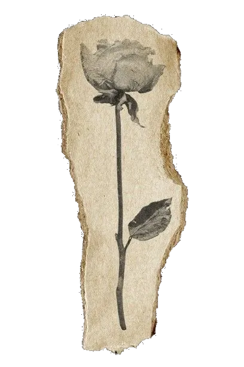
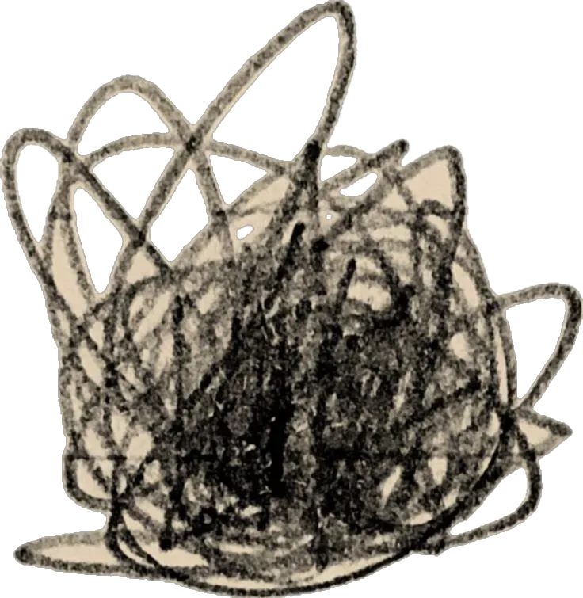
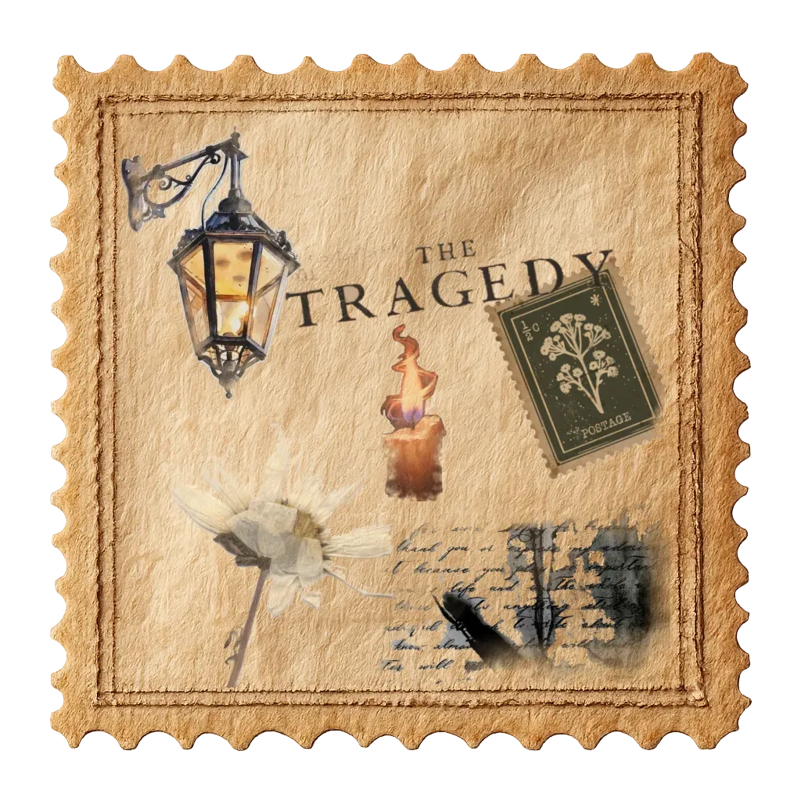
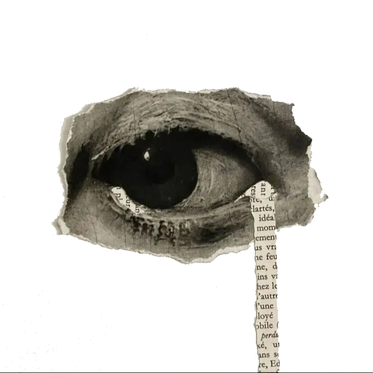
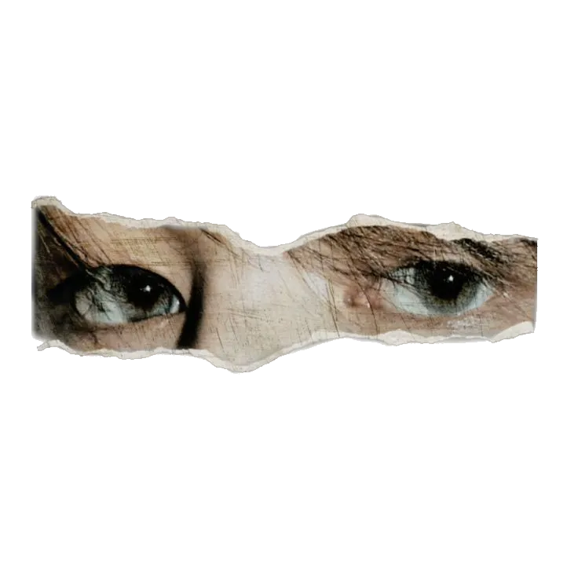
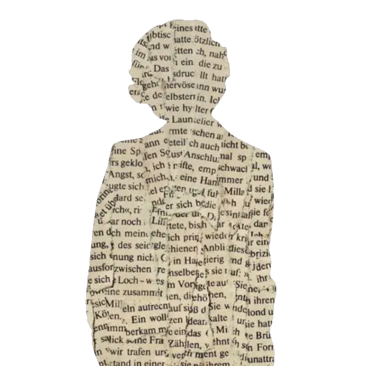
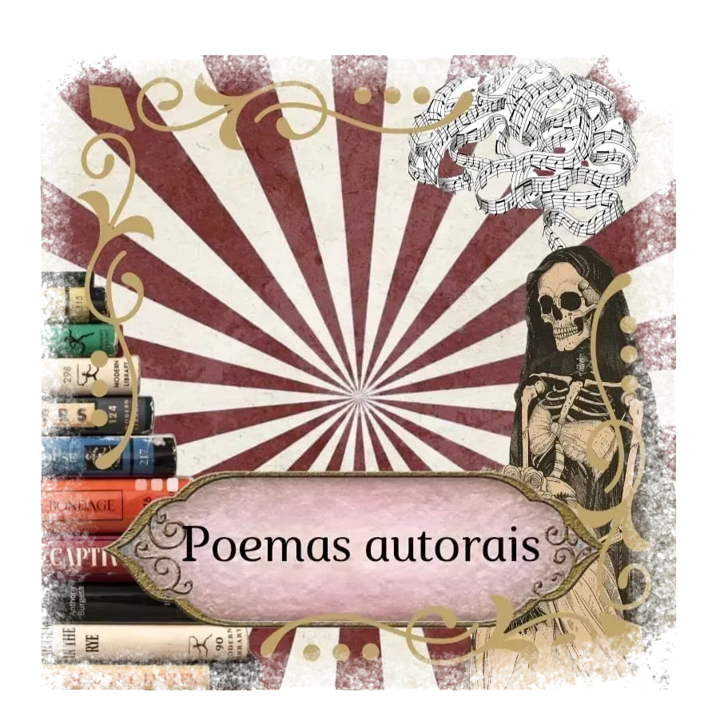
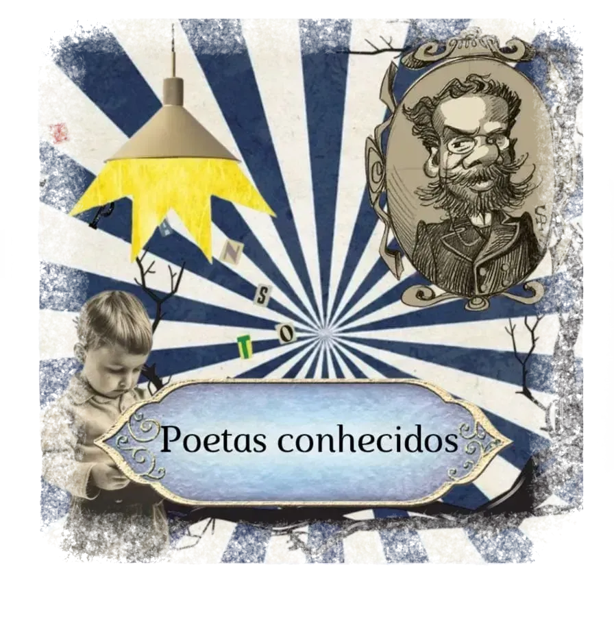

palavras que habitam o tempo

Este espaço reúne dois mundos da poesia — os versos nascidos aqui dentro e as palavras dos que já habitam a história da literatura.
Em Poemas Autorais, você encontra as criações dos próprios alunos desta revista: sentimentos colocados em versos, experiências transformadas em poesia, vozes que ainda estão descobrindo o que têm a dizer.
Em Poetas Conhecidos, os grandes nomes que moldaram a língua portuguesa e a poesia universal — autores cujos versos atravessam gerações e continuam vivos em quem os lê.





